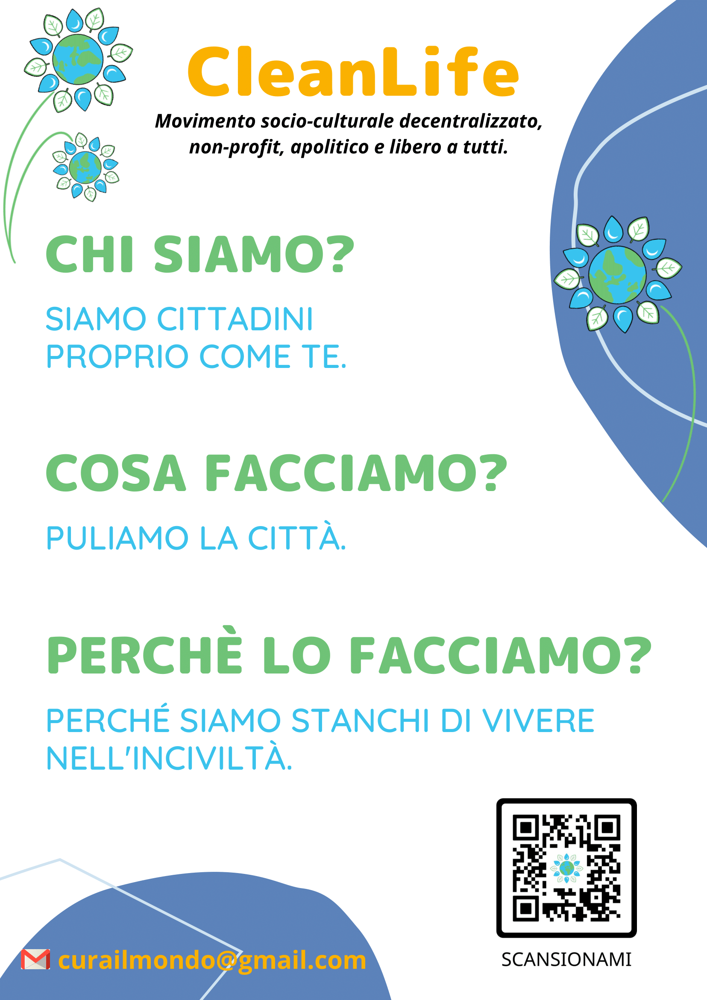

CleanLife
Descrizione
Movimento socio-culturale decentralizzato, non-profit, apolitico e libero a tutti che lotta per una vita più pulita! Siamo cittadini proprio come te, che hanno deciso di tramutare la rassegnazione in azione, il lamento in proposta. Una rete di persone sempre più vasta e determinata che si incontra periodicamente in strada per tornare a "riappropriarsi" delle aree abbandonate e degradate della propria città. Puliamo, raccogliamo e differenziamo rifiuti, curiamo il verde dei nostri parchi urbani, cancelliamo scritte vandaliche e rimuoviamo affissioni abusive. Ognuno di noi può agire attraverso piccoli gesti quotidiani o intervenire alla nostra maniera. Non vogliamo sostituirci alle istituzioni, ma al contrario, stimolarle in maniera concreta e propositiva per raggiungere un obiettivo comune! Agiamo nella legalità ed in dialogo con le amministrazioni pubbliche per ottenere risultati migliori. Accettare la realtà e pensare che la soluzione debba arrivare sempre dall’alto ha fatto sprofondare la nostra società in un abisso da cui solo noi stessi, collaborando in una rete positiva e fattiva, possiamo sperare di uscire. È il momento di intraprendere una rivoluzione gentile, di smetterla di stare a guardare ed adagiarsi nel lamento. Recuperiamo il valore dello stare insieme e dello spendersi per un obiettivo comune. E per cosa spendersi se non per la vivibilità della propria città? Insieme si può!
Instagram
Articoli
Intervista
Anteprima

